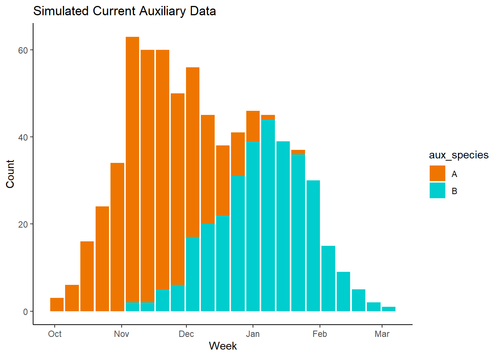
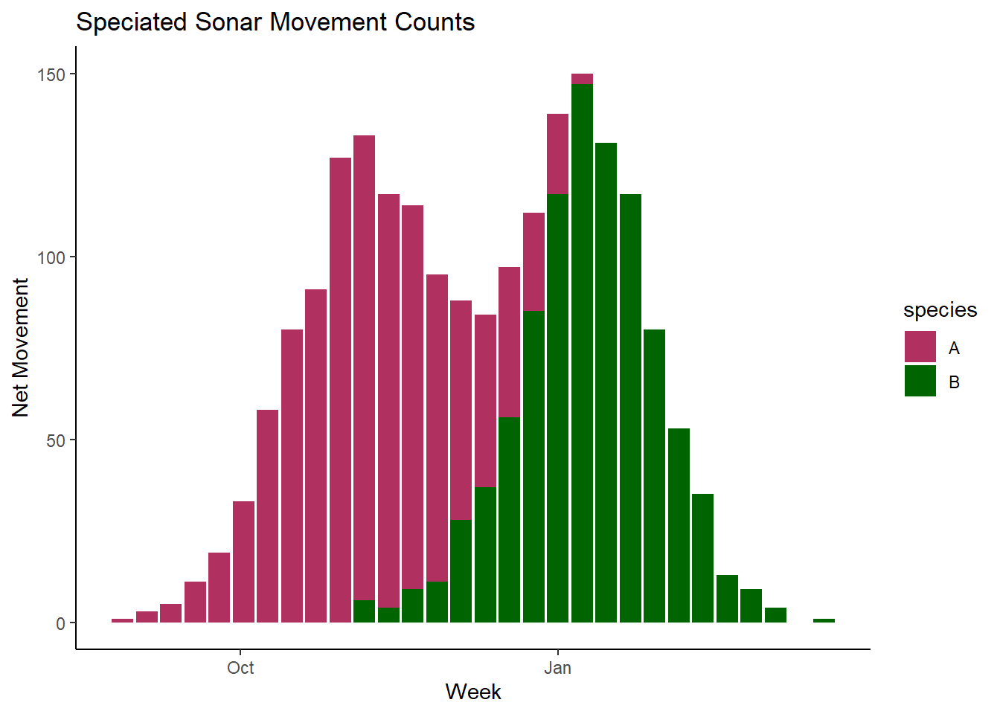
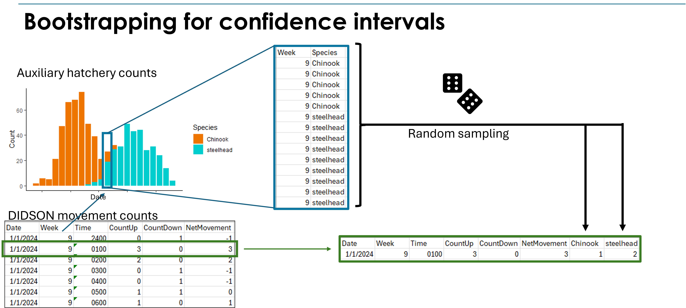
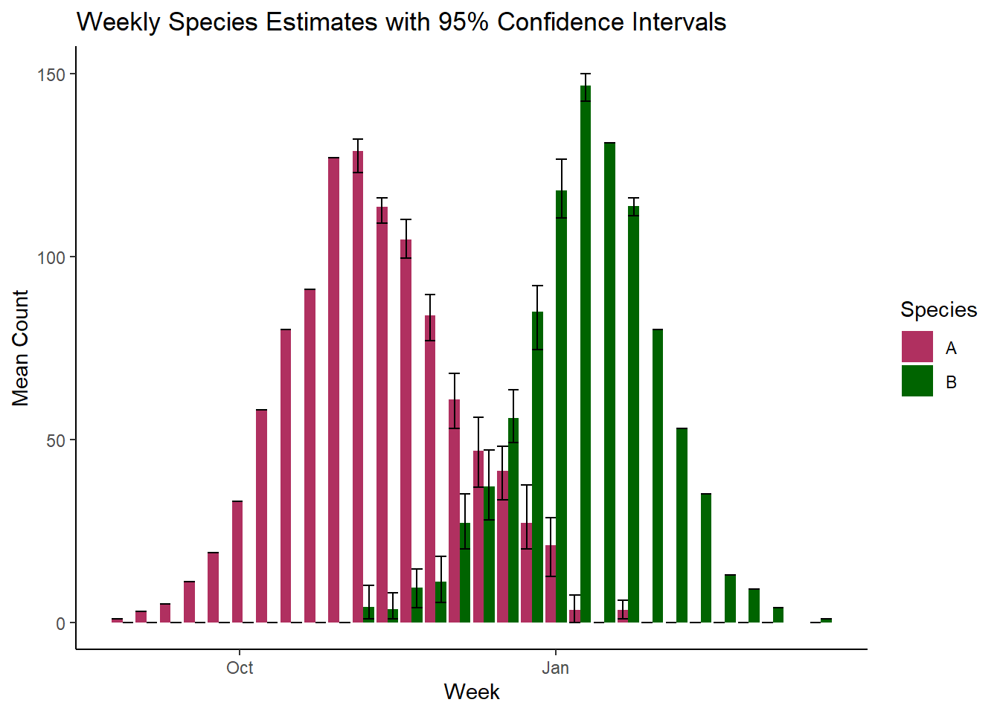

set.seed(123) # For reproducibility
# Simulate counts around the peaks using normal distributions
h_countsA <- round(rnorm(400, mean = as.numeric(as.Date("2023-11-20")),
sd = 20))
h_countsB <- round(rnorm(325, mean = as.numeric(as.Date("2024-01-10")),
sd = 22))
# Create dataframes, add species columns, and combine in one step
date_counts <- bind_rows(
as.data.frame(table(as.Date(h_countsA, origin = "1970-01-01"))) %>%
rename(date = Var1, Count = Freq) %>%
mutate(aux_species = "A"),
as.data.frame(table(as.Date(h_countsB, origin = "1970-01-01"))) %>%
rename(date = Var1, Count = Freq) %>%
mutate(aux_species = "B")
)
# Convert Date column and bin by week
date_counts <- date_counts %>%
mutate(date = as.Date(date),
Week = cut(date, breaks = "week", start.on.monday = TRUE))
# Aggregate the counts by week and species
aux_current <- date_counts %>%
group_by(Week, aux_species) %>%
summarise(Total_Count = sum(Count), .groups = "drop") %>%
mutate(Week = as.Date(Week)) # Convert Week to Date type for plottingIn-season species proportion
Let’s use our simulated data daily_sonar data again, however this time our auxiliary counts will be from the same year as our sonar data. This method determines the proportion of counts for each species in a given period of sonar data based on the proportions seen in a proximate (spatially and temporally) auxiliary data set. This is similar to methods used in Nolan et al. (2023), Mora et al. (2018), and suggested in Boughton, Nelson, and Lacy (2022). The following simulated data is produced in the same manner as the historical auxiliary data we created, but this time representing count data collected the same season as our sonar data.

Again we can calculate weekly species proportions for our auxiliary count data using the methods detailed in the last section:
aux_proportions <- aux_current %>%
group_by(Week) %>%
mutate(total_n = sum(Total_Count),
proportion = Total_Count / total_n) %>%
ungroup()We can utilize those weekly proportions from the proximate auxiliary counts to assign weekly proportions of species to our sonar count data. This is based on the assumption that the proportion of a given species in the sonar count is equal to the proportion of that species in our auxiliary data:
\[ P_{A,i} = \frac{N_{A,i}}{N_i} \tag{1}\]
Where \(P_{A,i}\) is the proportion of species A during period \(i\), \(N_{A,i}\) is the number of fish of species A captured in our auxiliary data set during period \(i\), and \(N_i\) is the total number of fish captured in our auxiliary data during period \(i\). A side note: if the auxiliary data is some distance away from the sonar counts, we may try and utilize a lag-time in our proportion estimates, so that the catch at the hatchery during week \(i\) is representative sonar data from week \(i-1\).
Start by joining our simulated daily_sonar data to the hatchery_proportions data we produced.
daily_sonar_nospecies<-daily_sonar%>%
group_by(date,Week)%>%
summarise(Net_Movement=sum(Net_Movement))
daily_sonar_proportions<-daily_sonar_nospecies%>%
left_join(aux_proportions,by="Week")If you take a look at the daily_sonar_proportions data, you’ll see that our sonar movement data starts and ends several days outside the hatchery count date range. To deal with this we can assume that sonar movement counts before the first week of hatchery data are species A, and movement counts after the last week of hatchery data are species B. We can do that with the following code chunk:
# Identify the first and last hatch dates
first_aux_week <- first(aux_proportions$Week)
last_aux_week <- last(aux_proportions$Week)
daily_sonar_proportions$predicted_species<-NA
# Assign species based on date conditions
daily_sonar_proportions <- daily_sonar_proportions %>%
mutate(
predicted_species = case_when(
is.na(predicted_species) & Week < first_aux_week ~ "A",
is.na(predicted_species) & Week > last_aux_week ~ "B",
is.na(predicted_species) ~ aux_species
),
proportion = if_else(is.na(proportion), 1, proportion)
)
daily_sonar_proportions<-daily_sonar_proportions%>%
mutate(assigned_count=round(proportion*Net_Movement))Next we can assign a proportion of each days sonar movement count to either of the two species based on the proportion of that species from the hatchery count data for that week.
weekly_sonar_proportions<-dplyr::select(daily_sonar_proportions,
Week,date,
species=predicted_species,
assigned_count)Plotting the above data, we get results similar to what we had with the in-season cutoff, but here we have proportional data that shows overlap in species counts, so that we aren’t assuming there is no overlap in run timing.

The above method of speciation is still relatively simple in it’s execution, and relies on the following assumptions:
All fish passing through the sonar site are either one of two species.
Auxiliary catch proportions are representative of the true proportions seen in sonar data.
Now we can use the speciation above to estimate our seasonal abundance for each of the two species:
N_est2<-weekly_sonar_proportions%>%
group_by(species)%>%
summarise(total=sum(assigned_count))
N_est2# A tibble: 2 × 2
species total
<chr> <dbl>
1 A 1057
2 B 943Referencing our original simulated sonar data, we know we had 1000 individuals for species A and 850 for species B, so our accuracy in our end abundance estimates is pretty good. However we won’t know the true numbers when using real data, so we’ll need a way to estimate uncertainty.
Estimating uncertainty
We can expand upon the in-season proportion method created above by using iterative “bootstrapping” to generate confidence intervals of our estimates. This is done iteratively re-sampling our auxiliary hatchery count data to assign species counts to our sonar data. This process is repeated for a set number of iterations to generate variance, which is then used to estimate confidence intervals. One advantage of bootstrapping is that it does not rely on assumptions of normality, making it a robust method for data with unknown distributions.
We can begin the bootstrapping by writing a function that takes our auxiliary species count data (aux_proportions) for each week of the sonar survey and randomly samples the counts to assign species to the sonar movement data. (Figure 1).

sonar_sampling <- function(daily_sonar, aux_data) {
weeks <- unique(daily_sonar$Week)
#estimate weekly proportions of auxiliary species counts
aux_proportions <- aux_data %>%
group_by(Week) %>%
mutate(total_n = sum(Total_Count),
proportion = Total_Count / total_n) %>%
ungroup()
# Predefine data frame for results
weekly_sonar <- vector("list", length(weeks))
# Get boundary weeks for aux_proportions
first_aux_week <- min(aux_proportions$Week)
last_aux_week <- max(aux_proportions$Week)
for (i in seq_along(weeks)) {
week <- weeks[i]
# Get auxiliary data for the current week
wk_sp <- aux_proportions %>% filter(Week == week)
wk_sonar <- daily_sonar %>% filter(Week == week)
# Create species vector or default to "A" or "B" based
#on week range this is for weeks of sonar data
#that don't match up with weeks of aux data
sp_vec <- if (nrow(wk_sp) > 0) {
rep(wk_sp$aux_species, wk_sp$Total_Count)
} else if (week < first_aux_week) {
"A"
} else if (week > last_aux_week) {
"B"
} else {
character(0)
}
# Perform sampling and count occurrences of each species
if (length(sp_vec) > 0) {
samp_sonar <- sample(sp_vec, sum(wk_sonar$Net_Movement),
replace = TRUE)
samp_A <- sum(samp_sonar == "A")
samp_B <- sum(samp_sonar == "B")
} else {
samp_A <- 0
samp_B <- 0
}
# Store results in a list to avoid repeated data frame binding
weekly_sonar[[i]] <- data.frame(Week = week, A = samp_A, B = samp_B)
}
# Bind the list into a single data frame after the loop
weekly_sonar <- do.call(rbind, weekly_sonar)
return(weekly_sonar)
}The above function takes our simulated data daily_sonar and aux_data and does the following:
Makes a vector listing all the weeks of survey.
Calculates the species proportions for each week of the auxiliary data.
Runs a
forloop that assigns a species to sonar counts by sampling from corresponding weeks of the auxiliary data.For weeks of sonar data outside of the range of aux data, the loop assigns species A to early counts, and species B to later counts.
We can now use the above sonar_sampling function to “bootstrap” our data to estimate the distribution of our species counts generated with some sampling error. For this example, we repeat the sampling process using our function for 25 iterations in a simple for loop. When running bootstrapping yourself, you’ll likely want to aim for 500 to 1000 iterations, which will take quite a bit longer to run.
#bootstrapping boogie
iterations<-100
results<-data.frame()
for(j in 1:iterations){
iter<-data.frame('iteration'=j)
d<-iter%>%cbind(sonar_sampling(daily_sonar,aux_current))
results<-results%>%rbind(d)
}
head(results) iteration Week A B
1 1 2023-08-28 1 0
2 1 2023-09-04 3 0
3 1 2023-09-11 5 0
4 1 2023-09-18 11 0
5 1 2023-09-25 19 0
6 1 2023-10-02 33 0The results output of our bootstrapping shows weekly species counts for sonar data produced by our random sampling of auxiliary data. We can group the results together by iteration for an estimate of species total for each season, and then calculate lower and upper 95% confidence intervals using the quantile() call.
#iteration total estimates
iter_totals<-results%>%
group_by(iteration)%>%
dplyr::summarise(A=sum(A),
B=sum(B))
#bounds
A_stats <- quantile(iter_totals$A, probs = c(0.025, 0.975))
B_stats <- quantile(iter_totals$B, probs = c(0.025, 0.975))
A_mean<-mean(iter_totals$A)
B_mean<-mean(iter_totals$B)Using the above we see that our estimate of total abundance of species A in our sonar counts is 1057 with 95% CI [1043, 1078] and a count of 943 with 95% CI [922, 958] for species B.
We can also estimate 95% confidence intervals for our weekly species assignments using the results output.
# Weekly total estimates with confidence intervals
weekly_results <- results %>%
group_by(Week) %>%
summarise(
A_mean = mean(A),
A_lb = quantile(A, probs = 0.025),
A_ub = quantile(A, probs = 0.975),
B_mean = mean(B),
B_lb = quantile(B, probs = 0.025),
B_ub = quantile(B, probs = 0.975),
.groups = "drop"
) %>%
pivot_longer(
cols = 2:7,
names_to = c("Species", ".value"),
names_sep = "_")
The above figure shows that during periods of run-timing overlap, our precision in estimation of species assignment decreases substantially. The more overlap in run-timing, the more bias we can expect in our speciation.
The above method of speciation provides a straightforward approach for leveraging more contemporary auxiliary data to infer species composition in sonar detection studies. Using the species proportions from this auxiliary data set we assign species proportions to sonar data, and can iteratively resample the data through “bootstraping” to estimate confidence intervals. Key assumptions to realize when utilizing this method are:
All fish being speciated are either one of two species.
Species proportions in the auxiliary data is representative of the fish community at the sonar site.
When considering auxiliary data sets to use for informing species apportionment, the more proximate the data to the sonar site, the more accurate species assignments will likely be.
References
Boughton, David, Jennifer Nelson, and Michael K Lacy. 2022. “Integration of Steelhead Viability Monitoring , Recovery Plans and Fisheries Management in the Southern Coastal Area,” 1–116.
Mora, Ethan A., Ryan D. Battleson, Steven T. Lindley, Michael J. Thomas, Russ Bellmer, Liam J. Zarri, and A. Peter Klimley. 2018. “Estimating the Annual Spawning Run Size and Population Size of the Southern Distinct Population Segment of Green Sturgeon.” Transactions of the American Fisheries Society 147 (1): 195–203. https://doi.org/10.1002/tafs.10009.
Nolan, Jesse, Erika Partee, Jennifer Jacobs, and Ryan Nelson. 2023. “2021-2022 Sonar-derived estimates of Chinook Salmon Prepared by :” April. Tolowa Dee-ni’ Nation.